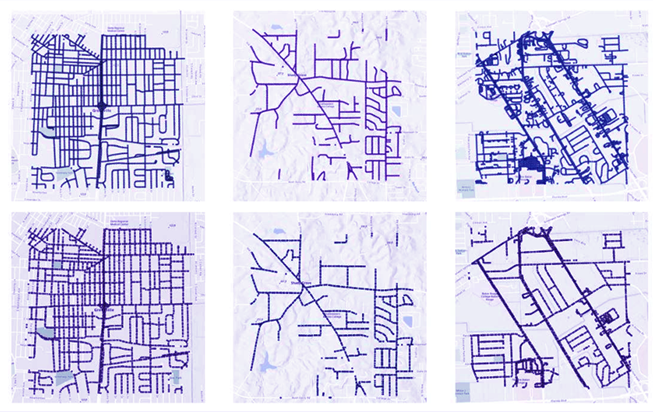
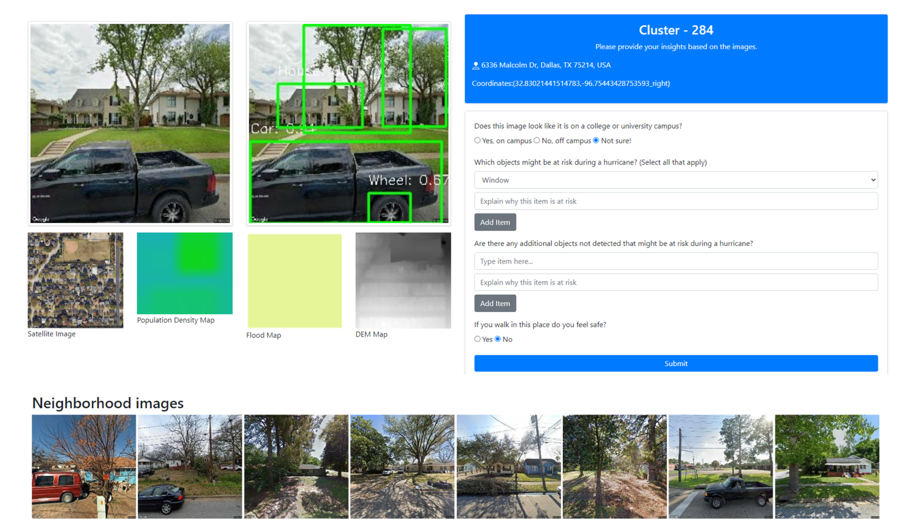

This project explores the use of AI and GIS technologies to assess and understand student perceptions of flood risks on university campuses. A web-based platform was developed to integrate and visualize flood-related data, empowering users to explore campus vulnerabilities and provide feedback on perceived risks.
We created a dataset of georeferenced maps, satellite imagery, street view images, flood maps, density maps, and digital elevation models (DEMs) from 30 Gulf of Mexico university campuses. Campuses with at least 80% street view coverage were included, resulting in a dataset of 675,486 images.
Figure 1: Filtering campuses based on street view data availability.
The web interface integrates macro-level data (e.g., satellite images) and micro-level data (e.g., street view images) to visualize flood risks. Features include:
Figure 2: SOM visualization of campus environments.
Figure 3: Labeling interface per SOM cell.
A two-day workshop with 205 participants gathered insights on campus flood risks. Feedback was analyzed using qualitative and quantitative methods, including:
Figure 4: Word cloud of student concerns and Heatmap of keyword correlations.
Students identified significant risks, including falling trees, vehicle damage, and unsafe campus areas during floods. The insights highlight the need for targeted interventions and improved campus disaster preparedness.